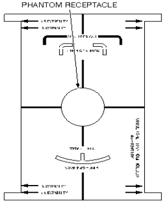
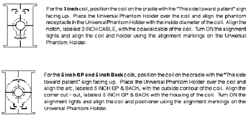
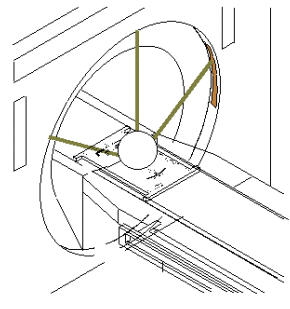

Operating Documentation
Direction 5133330-3, Rev# 14
Signa EXCITE HD 3.0T Service Methods
Module Version 1.0, Version Date 5/3/07
Operating Documentation |
| Required Persons | Preliminary Reqs | Procedure | Finalization |
|---|---|---|---|
| 1 | Not Applicable | 30 mins | Not Applicable |
| Item | Qty | Effectivity | Part# | Manufacturer | |
|---|---|---|---|---|---|
| Universal Phantom Holder (See Illustration 1) | 1 | - | 46-328383P1 | - | |
| 100mm Sphere Phantom | 1 | - | 2360034 | - | |
| TLT Head Sphere Phantom (for Flex Coil) | 1 | - | 2359877 | - | |
| Head Loader (for Flex Coil) | 1 | - | 2360031 | - | |
| ||||
| Poison Hazard! | ||||
| The phantom contains Dimethyl Silicone fluid. DO NOT INGEST. Eye contact may cause minor irritation. | ||||
| If a leak or spill occurs, wipe up or absorb in inert material and place in container for disposal. Incineration or landfill is the recommended disposal method. |
| Condition | Reference | Effectivity |
|---|---|---|
No image artifacts | - | - |
At the operator workspace, select the scan icon in the desktop control panel.
Illustration 1: UNIVERSAL PHANTOM HOLDER

If necessary, exit out of any previous exams by selecting [End Exam].
Click on [New Pt ]and enter the following:
Id: geservice
Name: snr check
Weight (lb.): 111
| NOTE: | Possible equipment damage. Completely remove the Quad Head Coil from the cradle before performing any body scans. Failure to do so may damage the Head Coil T/R Network. |
Remove the Quad Head Coil (if present) from the cradle.
Place the surface coil to be tested on the table.
Connect the coil connector to its mating connector in the Carriage Assembly.
For Coils using the Universal Phantom:
| NOTE: | The General Purpose (GP) Flex Coil uses the Head Coil TLT phantom and loader for its phantom (not the Universal Phantom). Refer to Step 8 for General Purpose (GP) Flex Coil setup details. |
Position the Universal Phantom Holder on the coil. Refer to Illustration 2 for specific details for each coil type.
Illustration 2: UNIVERSAL PHANTOM HOLDER SETUP

Place the 100-mm phantom in the phantom receptacle, LANDMARK, and MOVE TO SCAN. See Illustration 3.
Illustration 3: LANDMARKING UNIVERSAL PHANTOM

GP Flex Coil Setup: Set up Flex Coil per Illustration 4. LANDMARK, and MOVE TO SCAN.
Illustration 4: GP FLEX COIL PHANTOM SETUP

At the operator workspace, prepare the system for an SNR Check (Surface Coil SNR) scan using the scan.
Click on [Autoview], just below the Autoview image display screen, to automatically display your images.
Click on [Save Series], then [Prepare to Scan].
Right click on [Research Operation] and click on [Display CVs.]
Type in rh_rc_enhance_enable<ENTER> and change current value to 0, Press <ENTER>.
After entering CV, click [Accept.]
Click on [Research Operations] and select [Download].
Click on [Auto Prescan] to properly calibrate the RF power level for the 90-degree and 180-degree pulses.
Click on [Scan]. Record the Exam number and Series number for SNR Calculations. After the first scan is complete, click on [Scan] again (two back-to-back scans).
For analysis, see Section Image Analysis.
No finalization steps.